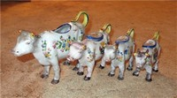
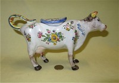
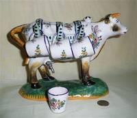
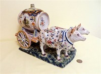
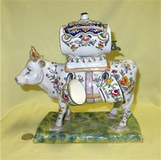
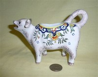
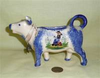

Faience
From reviews on www.ebay.com, I found that;
“Faience is generally defined as tin glazed earthenware. It is a mixture of local clays to which oxide of
tin is added, so that it can become opaque and take on a white color. Hiding the impurities of the
underlying clay body, it imitates the fineness of porcelain. A hand painted decoration is added to the
clear surface. Faience became popular in Holland, Italy and France in the 17th century. The more commonly known European towns important in Faience production in the late 19th and 20th
centuries include Blois, CA, Charolles, Desvres, Gien, Luneville, Moustiers, Nevers, Quimper, St Clement
and others. Faience ranges from tableware, through jardinieres and fountains, to clocks.
“Faience potteries, or tin-enameled earthenware, date back to ancient times. The actual name "faience" comes from "Faenza", a town in Italy, and was introduced in France in the 16th Century by migrant Italian potters. Earlier on, faience had often been thought to be nothing more than peasant ware, and not appropriate in elegant French chateaus or palaces. However, in the mid 19th Century, France and its royalty fell into financial crises after numerous wars and other national economic disasters.
“The Industrial Revolution in the mid to late 19th Century brought new manufactured products and improved distribution of these goods. A newly emerged middle class sought items of aesthetic beauty for their lives and in their homes. Mass production allowed ordinary people to enjoy luxuries of life in a new era of economic independen. The faience pottery of the late 19th and early 20th Century revived a long history of the potters’ art, and embodied an artistic and social statement of the times. The earlier historic decors of Nevers, Rouen, Moustiers, Strasbourg, and Marseilles were captured and reproduced by factories at Quimper, Desvres, Boulogne-sur-Mer, Malicorne and others.”
While I have seen lots of faience at antique fairs, I have found very few cow creamers. The ones that I do have, however, are very lovely.

These four lovely examples come from the studios of Faiencerie Artisanale Roullet-Renoleau, founded by Alfred Renoleau (1854-1930) in 1896. They are still in business, and you can see a variety of their current wares (no cows at the moment but they tell me they are in the process of designing one) and learn about their history and manufacturing process at their website, www.roullet-renoleau.fr There I learned that the founder “was born in Mansle in 1854, son of a hairdresseThese four lovely examples come from the studios of Faiencerie Artisanale Roullet-Renoleau, founded by Alfred Renoleau (1854-1930) in 1896. Back around 2008 or so I found that they were still in business, and learned about their history and manufacturing process at their then website, www.roullet-renoleau.fr There I learned that the founder “was born in Mansle in 1854, son of a hairdresser. It is when doing his "military service", in Paris that he discovers Bernard Palissy's work (Bernard Palissy was a French chemist, inventor, or rather initiator, in France of the enameled pottery, known since as earthenware…)… After trials starting in 1880 in Mansle, then effective productions in Roumazières”… Renoleau started the faiencerie in Angouleme, in the Poitou-Charentes region of France. He had no children of his own, but adopted a nephew Joseph Roullet who took over the firm after Renoleau’s death, leading to the Pottery’s and succeeding owners’ names, Roullet-Renoleau. On New Years Day 2019 I decided to revisit their web site, and found to my dismay that it now takes you to a shoe store. Egad, what a shock. A frantic web search turned up a 10 Nov 2012 article in www.charentelibre.fr that informed me that the great-grand-nephew of the founder, René-Marie Roullet-Renoleau, had sold the business in 2010, but then the buyer failed. Determined not to abandon the proud history of the firm, not to mention the more than 120 molds and lots of pottery, René-Marie came out of retirement and started again with just three employees - his son Christophe – the 5th generation ceramicist – a decorator and her assistant, in “the historic factory of ‘Bass’ in Saint-Genis-d'Hiersac”. Apparently this effort again came to naught after a few years since a 19 March 2017 article from the same source announced that without a buyer, and due to falling revenues, the Faiencerie would be liquidated. A short video from www.dailymotion.com on 30 Nov 2017 shown the remaining inventory being auctioned. A sad story from my perspective as well as for the many others who admired the beautiful faience from this historic firm. |
|
|
|
|
|
|  |
Well, the collection has now grown to include a 5th from the Renoleau studio, this time marked for ‘Dinan’ and bearing a maker’s mark that looks sort of like an open ‘4’. Presumably it was decorated by someone other than the ‘master’, or he just left his initials off. It’s just a bit smaller than the larger St Malo cow. Like St Malo, Dinan is a popular medieval town for tourists to visit in Brittany. It sits above the River Rance, and in addition to the port the medieval town on the hilltop features many fine 13c buildings and a 3km section of city walls. From Wikipedia I also learned that the ~1066 Bayeux Tapester has a section that shows “Here the knights of Duke William fight against the men of Dinan”. |
|  |
Well.. this isn’t a creamer, but it is another cow from Alfred Renoleau and bears the same marks as its relatives. I believe it was designed to hold a liqueur or cordial of some sort – thus the spigot in the side and the little cups (two are missing). |
|  |
Here is another lovely Renoleau decanter, this time pulled by a pair of bulls. The spigot is (or was – it has been replaced by a cork) in the back of the barrel, and cups apparently were separate because none came with this piece. |
 |
Here is a different version of a cow liqueur or cordial decanter. It bears the mark of a connected “VR” and the word “France”. Although it came to me without history, from an (almost) identical one offered on eBay (for $989…mine was $125 a few years ago) I believe it to be Rouen décor, late 19c, made in Desvres by the Fourmaintraux Freres factory, circa 1879-1887. The one on eBay has ‘Mont-Saint-Michel’ written on the bottom, so I presume that this magnificent beast, like the Renoleau ones, was made to be sold as a souvenir. |
|  |
This large cow decanter bearing a barrel is quite similar to the one above, although smaller (10”x9½” vs 12”x12”) and with just two hooks and cups on each side instead of three. It is marked on the bottom for “Le Trémont” which is in Normandy. It also bears the numbers “1804/1” and the signature of the artist. The cups are not the originals but are from the same region, and to my mind match quite nicely. It came to me from Germany. |
|
This lovely faience decanter with its cups on metal hooks is by Georges (Geo) Martel of Desvres,
France. It is interestingly also marked ‘Cabourg’ on the base, which is a commune in the Calvados
department in the Normandy region, so – just like the decanter above marked for Mount St Michel, -it
was presumably made for sale at this popular tourist town (we learn from Wikipedia that it was from
Cabourg that William the Conqueror drove the troops of Henry 1 of France back into the sea, also that
it was a favorite vacation spot for Marcel Proust). Searching the web for information about Geo
Martel, we learn from http://www.archivespasdecalais.fr
that “In 1900, Georges Martel bought from Gaëtan Level a ceramics factory located in Desvres,
specialized in the reproduction of old pieces (Rouen, Delft, Nevers). The first world war brought the
production of earthenware to a halt, because most of the staff as well as Georges Martel himself were
mobilized. It was not until the intervention of Mrs. Martel-Legrand in the course of the year 1916 to
restart the factory. Although Georges Martel is recognized around the world, the war has changed its
commercial network and new directions are needed…. In 1927, he worked in parallel; with workshops in
iron art. …Unfortunately, the economic, social and political problems of our time are not right for
the manufacture, which closes definitively its doors in April 2003. …”. There is quite a bit of his
lovely faience pottery available on a number of sites. This may also be a good spot to add a bit more about this style of faience, again from the web: “While faience can be created from a wide mixture of clays, it is foremost distinguished by the milky opaque white color achieved by the addition of tin oxide to the glaze. French faience is typically divided into two types. Grand feu (high fire) describes pieces that have been decorated with glaze and metallic oxides before being fired a single time at a high temperature of around 1650°F (900°C). Petit feu (low-fire) faience, developed in the second half of the eighteenth century, refers to a process whereby the clay body is fired before being glazed and decorated with metallic oxides and then fired again at a lower temperature; pieces can also go through a third firing. Grand feu pieces have a more limited color palette that consists of blue, yellow, brown-purple, and green. By contrast, the lower firing temperature of petit feu faience enabled both greater precision in painting techniques and variety in the range of colors.” |
|
|
|
|
|
|  |
This delightfully colored version is marked “Rouen – fait main” providing a bit more information on their provenance. |
|  |
I have included this modern creamer, of fairly standard shape, in the Faience theme because it is clearly marked “Desvres, France”, with a hand-written “Breiz” and a maker’s mark of a circle with rays with a script “GF” inside. It’s by no means as fancy as the older ones, but looks a lot like much of the fairly modern ‘Quimper faience’ I’ve seen at antique fairs. |

{kind=link}
{kind=link}
{kind=link}
{kind=link}
{kind=link}
{kind=link}
{kind=link}
{kind=link}
{kind=link}
{kind=link}
{kind=link}
{kind=link}
{kind=link}
{kind=link}
{kind=link}
{kind=link}